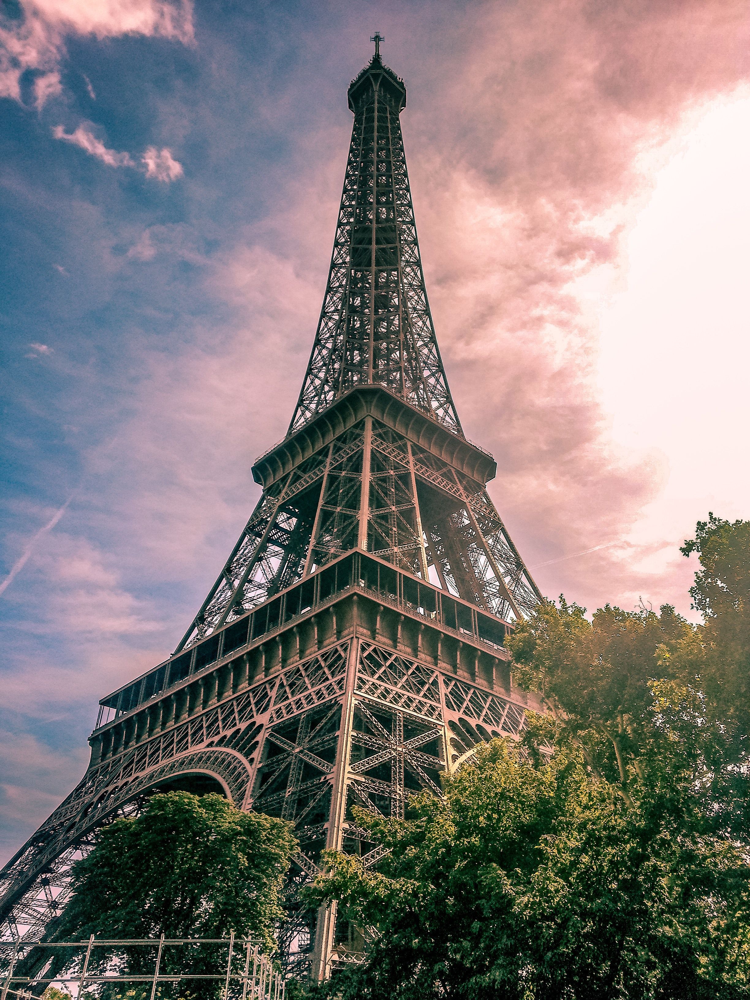

It's my and my husband's dream to go to Hawaii. We both love the ocean, being on the beach, and the tropical vibe. We also love the fact that there is always the same warm temperature there. And of course Hawaii is abosultely beautiful! We are hoping to go there in the next couple of years.
Beatiful Hawaii. Photo by Troy Squillaci from Pexels.Photo by Tyler Lastovich from Pexels.
Italy
I have always wanted to go to Italy. Italian food is my absolute favorite food, I love the archcitecture, the culture, the scenery, etc. Some of my favorite movies are movies that take place in Italy, like Under the Tuscan Sun or Letters to Juliet. I don't know when I'll be able to go there but it's definitely on my bucket list.
Photo by Melissa Thomas from Pexels.Photo by Vincent Rivaud from Pexels.
Paris
Another place I have always wanted to visit is Paris. I studied French in high school for three years and I even picked French as one of my high school exit exam subjects. What I love the most about Paris, and France in general, is their sophisticated culture and... baked goods! I love baking, it's my hobby and I absolutely adore eating pastries of any kind and I would love to go to Paris and tour bakeries and patisseries.

Photo by Nextvoyage from Pexels.Photo by La Miko from Pexels.Photo by Laura Stanley from Pexels.
Spain
In Spain I'd like to see Barcelona and Madrid, as well as some other coastal cities. The main reason I wanna go there is to practice my Spanish, which I studied in college, and to eat local food and admire the archcitecture.
Photo by Alex from Pexels.Photo by Enrico Perini from Pexels.Photo by Tomáš Malík from Pexels.
Greece
Greece is known for being the cradle of Western Civilization, the birthplace of democracy, the Olympic Games, and its ancient history and magnificent temples. Ancient temples in Greece include the Parthenon at the Acropolis in Athens, the Temple of Apollo at Delphi, and the Temple of Poseidon at Sounion. I have always been interested in ancient civilizations so I would love to see the Greek monuments. I also love the white houses typical of Greek architecture. This would be an awesome trip!
ParthenonAncient Greek Temple. Photo by Josiah Lewis from Pexels.
Egypt
I have been obsessed with Ancient Egypt since I was a child. It's one of my biggest dreams to see the ancient pyramids and temples in Egypt! I hope I'll be able to go there one day.
Photo by Roxanne Shewchuk from Pexels.Photo by Roxanne Shewchuk from Pexels.The Pyramids of Giza. Photo by David McEachan from Pexels.
Japan
Japan is known worldwide for its traditional arts, including tea ceremonies, calligraphy and flower arranging. The country has a legacy of distinctive gardens, sculpture and poetry. Japan is home to more than a dozen UNESCO World Heritage sites and is the birthplace of sushi, one of its most famous culinary exports. I love Japanese architecture, Japanese gardens, and tea, so I would love to go there and see all these beatiful places in person.
Photo by Tomáš Malík from Pexels.Photo by Sunil Poudel from Pexels.Photo by Frans Van Heerden from Pexels.
The Grand Canyon
Widely known for its exceptional natural beauty and considered one of the world's most visually powerful landscapes, the Grand Canyon is celebrated for its plunging depths; temple-like buttes; and vast, multihued, labyrinthine topography. Scenic wonders within park boundaries include high plateaus, plains, deserts, forests, cinder cones, lava flows, streams, waterfalls, and one of America’s great whitewater rivers.
Photo by Ian Beckley from Pexels.Photo by Jarod Lovekamp from Pexels.Photo by Sarah Howell from Pexels.